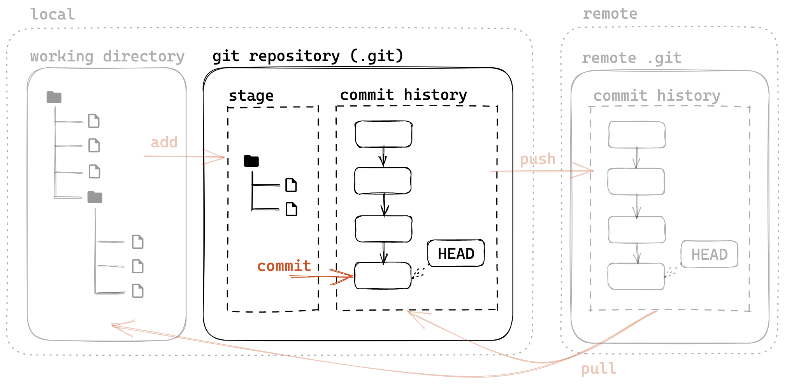
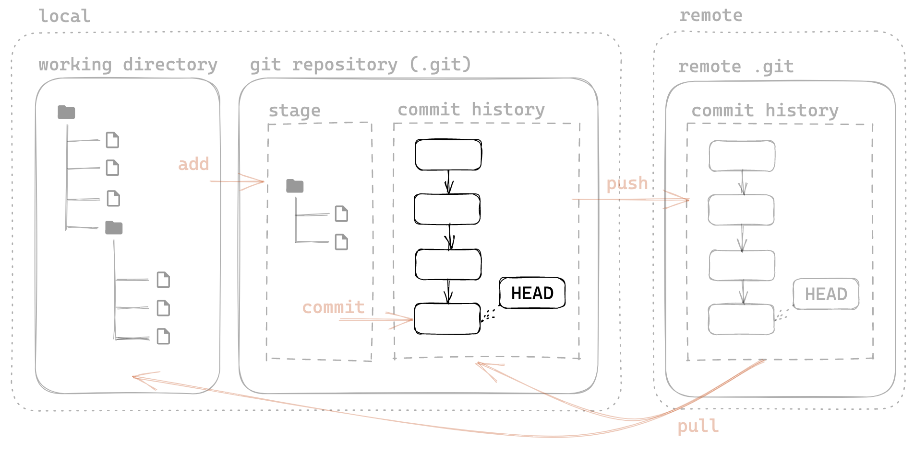
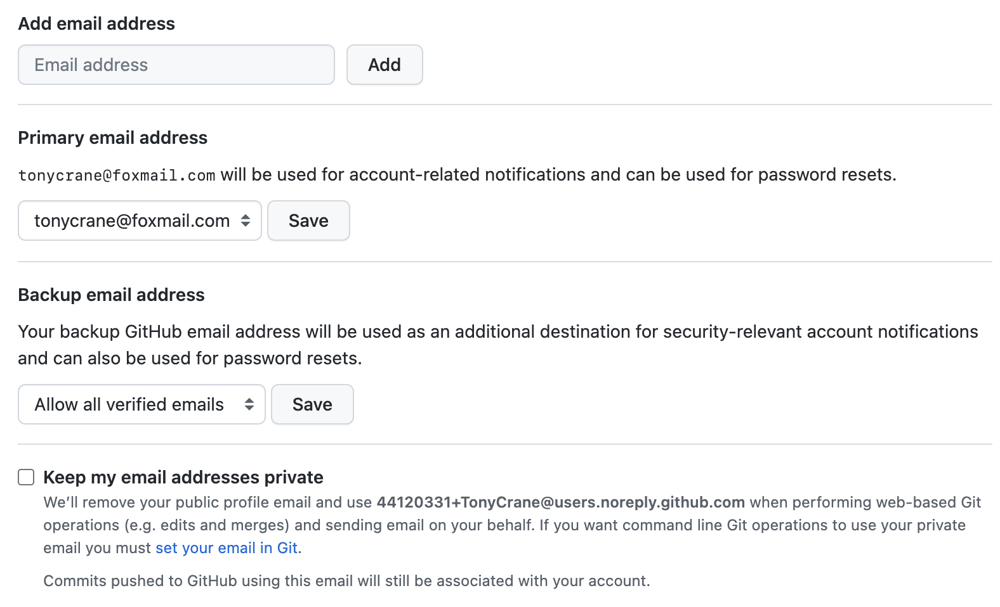
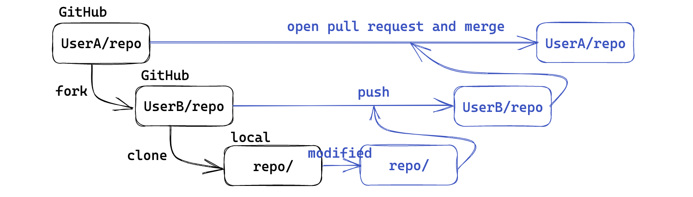

<!DOCTYPE html>
<html lang="en">
  <head>
    <meta charset="utf-8" />
    <meta name="viewport" content="width=device-width, initial-scale=1.0, maximum-scale=1.0, user-scalable=no" />

    <title>lec2 - 2023春夏实用技能拾遗</title>
    <link rel="shortcut icon" href="./favicon.ico" />
    <link rel="stylesheet" href="./dist/reset.css" />
    <link rel="stylesheet" href="./dist/reveal.css" />
    <link rel="stylesheet" href="./dist/theme/simple.css" id="theme" />
    <link rel="stylesheet" href="./css/highlight/github.css" />

    <link rel="stylesheet" href="./assets/custom.css" />

  </head>
  <body>
    <div class="reveal">
      <div class="slides"><section ><section data-markdown><script type="text/template">

<div class="middle center">
<div style="width: 100%">


# lec2：Git&hairsp;&hairsp;/&hairsp;&hairsp;GitHub 基础介绍

<hr/>

2023 年春夏学期计算机学院朋辈辅学「实用工具拾遗」课程

By [@TonyCrane](https://github.com/TonyCrane)

<div style="text-align: right; margin-top: 1em;">
<p>2023.4.2&emsp;&emsp;&emsp;</p>
</div>

</div>
</div>

</script></section><section data-markdown><script type="text/template">

## 本节内容

- Git
    - Git 基础：文件管理、提交 commit、分支 branch、合并 merge
    - Git 进阶：修改历史、变基 rebase、远程版本库
    - *略讲内容：子模块 submodule、探索 Git 结构
- GitHub
    - GitHub 基本操作概述
    - issue 与 pull request
    - *略讲内容：GitHub Pages、GitHub Actions

（不会讲解 Git 安装、稳定访问 GitHub 等内容）

</script></section><section data-markdown><script type="text/template">

## 我想让你 take-away 的内容

一些我在初学的时候没有了解到，但我希望通过我的讲解你可以了解到的内容

（也是我觉得很多人在讲授的时候可能缺少的我认为比较重要的内容）

- Git commit message 编写规范（Angular）
- 几种修改提交记录的方法
- 远程仓库与 GitHub 的本质
- GitHub 配置好邮箱的必要性
- GitHub Issue 与 Pull Request 的相关注意事项
- *签署 commit 的重要性


</script></section><section data-markdown><script type="text/template">

## 如何自学本章节内容


- 《Git 版本控制管理》[ISBN 978-7-115-38243-6](http://oreilly.com.cn/index.php?func=book&isbn=978-7-115-38243-6)
    - [*Version Control with Git*](https://www.oreilly.com/library/view/version-control-with/9780596158187/), Jon Loeliger
- *Pro Git (2nd Edition)*, Scott Chacon, et al.
    - https://git-scm.com/book/zh/v2
    - https://git-scm.com/book/en/v2
- Git Reference: https://git-scm.com/docs
- [git-flight-rules](https://github.com/k88hudson/git-flight-rules/blob/master/README_zh-CN.md)
- 实操❗️实操❗️一定要实操❗️❗️
    - [Learning Git Branching](https://learngitbranching.js.org/?locale=zh_CN)
    - [Gazler/githug](https://github.com/Gazler/githug)

</script></section></section><section ><section data-markdown><script type="text/template">

<div class="middle center">
<div style="width: 100%">

# Part.1 什么是 Git？

</div>
</div>

</script></section><section data-markdown><script type="text/template">

## 什么是 Git？

- 分布式版本控制系统（DVCS，Distributed Version Control System）
    - 分布式：不需要联网，在自己的机器上就可以使用
    - 版本控制：记录、管理、回溯文件的修改历史
- 官网：https://git-scm.com/
- 历史？
    - Linus Torvalds 在开发 Linux 内核时由于当时使用的分布式版本控制系统 BitKeeper 对于免费版本加入了限制，于是开发了一款免费自由而且解决了历代 VCS 缺陷的版本控制系统 Git
    - 2005.4.7，[Git 开始自托管](https://github.com/git/git/commit/e83c51633)；九天后，[Linux 转为使用 Git 作为 VCS](https://github.com/torvalds/linux/commit/1da177e4c)

<div style="text-align: center;">

</div>

</script></section><section data-markdown><script type="text/template">

## Git 模型

<div style="text-align: center;">

</div>

<p style="font-size: 0.5em; opacity: 0.7;">
本 slides 中所有图片均使用 excalidraw 原创绘制，转载请注明来源
</p>

</script></section><section data-markdown><script type="text/template">

## Git 基础配置

- 创建一个本地 git 版本库
    - 通过 git init 指令
        - git init：让当前文件夹变成 git 仓库（创建 .git 文件夹）
        - git init *folder*：创建一个新的文件夹并初始化为 git 仓库
- git 账号配置
    - Why？多人合作区分用户/让 GitHub 能够识别出你
    - 全局配置：
        - git config --global user.name "*name*"
        - git config --global user.email "*email*"
    - 针对某一版本库专门设置：
        - 同前，不加 --global

</script></section></section><section ><section data-markdown><script type="text/template">

<div class="middle center">
<div style="width: 100%">

# Part.2 Git 基础用法

</div>
</div>

</script></section><section data-markdown><script type="text/template">

## 文件暂存


- 暂存区：已经修改、等待后续提交的文件
- 将文件加入暂存区：
    - git add *file/folder*
    - 只会添加修改过的文件
- 删除文件的几种情况：
    - 只在本地删除版本库中不存在的文件：rm
    - 同时删除本地和版本库中的文件：git rm / 先 rm 再 add
    - 将一个已暂存的新文件取消暂存：git rm --cached
- 重命名文件：git mv（等价于 mv + git rm + git add）
- 查看当前工作区和暂存区状态：git status
    - 文件三个类别：未跟踪（Untracked）、已追踪（Tracked）、被忽略（Ignored）

</script></section><section data-markdown><script type="text/template">

## 关于 .gitignore

- 存放在版本库根目录下的名为 .gitignore 的文件，规定忽略哪些文件
- 语法
    - \# 开头的行为注释
    - \* 通配多个字符，\*\* 通配中间目录（有或无）
        - \*.c 匹配所有 C 文件，a/\*\*/b 匹配 a/b、a/x/b、a/x/y/b 等
    - / 开头只匹配根目录，否则匹配所有目录
    - ! 取消忽略
    - ...
    - [Git - gitignore Documentation](https://git-scm.com/docs/gitignore)
- git check-ignore -v *file*：查看某个文件是否被忽略，以及匹配的规则
- 常用语言的 .gitignore 模板：[github/gitignore](https://github.com/github/gitignore)

</script></section><section data-markdown><script type="text/template">

## 提交更改



- 将暂存内容提交到本地仓库，生成一个新版本
    - git commit：默认编辑器编辑提交信息
    - git commit -m "*message*"
    - -a (--all) 自动暂存所有更改的文件
- 查看提交历史：git log
    - --oneline：每一个提交一行
    - --graph：显示分支结构
    - --stat：显示文件删改信息
    - -p：显示详细的修改内容
- 每个提交都有一个唯一的 sha-1 标识符（40 位十六进制数）
    - git show *id*：显示提交详细信息（*id* 在不重复前提下可以只写前几位）
- 检出之前的某一版本：git checkout *id*

</script></section><section data-markdown><script type="text/template">

## 关于 commit message

- 意义是什么：记录更改的原因/内容，方便定位/回溯（特别是合作项目）
- Angular 规范（来源：[angular/angular:CONTRIBUTING.md](https://github.com/angular/angular/blob/main/CONTRIBUTING.md#-commit-message-format)）
    ```text
    <type>([scope]): <summary>

    [body]

    [footer]
    ```
    - type：更改类型（fix/feat/docs/refactor/perf/test/ci/...）
        - 重大更改可以写 BREAKING CHANGE 或 DEPRECATED（全大写）
    - scope：影响范围（可选，比如具体影响的模块等）
    - summary：更改的简要描述，英文一般现在时，首字母小写句末无句号
    - body：详细描述，可选
    - footer：解决 issue 了可以写 Fixes #*id* 或 Closes #*id*

</script></section><section data-markdown><script type="text/template">

## detached HEAD 问题

- 什么是 HEAD：当前工作区在提交历史中的指针
- 什么是 detached HEAD：HEAD 指向某个历史提交，而不是某个“分支”
- 什么情形会出现 detached HEAD
    - git checkout *id*，此后的修改不会出现在任何分支
    - 切换回 master 后会出现一条不属于任何分支的提交（相当于修改会丢失）

<div style="text-align: center; margin-top: 10px;">

</div>

- 如何解决：在 F 的位置上 git checkout -b *branch* 创建并检出新分支

</script></section><section data-markdown><script type="text/template">

## 分支



- 创建分支
    - git branch *name*：基于当前 HEAD
    - git branch *name* *id*：基于 *id* 提交
- 查看分支
    - git branch（带 -a 显示远程分支）
    - git show-branch 更详细
- 切换分支
    - git checkout *name*
    - git checkout -b *name*：创建并切换
- 内容比较
    - git diff *branch1* *branch2*：比较两个分支
    - git diff *branch*：比较工作区和分支
    - git diff：比较工作区和暂存区

</script></section><section data-markdown><script type="text/template">

## 分支（续）

如何更方便地定位提交

- 什么是分支名：和 HEAD 一样，也是一个指针（实际上叫引用 ref）
- 可以基于 ref 使用 ~ 或 ^ 定位父提交
    - ~ 表示第一个父提交，~2 表示第一个父提交的第一个父提交
    - ^ 表示第一个父提交，^2 表示第二个父提交
- 一个提交可能会有多个父提交（merge commit）

<div style="text-align: center;">

</div>

</script></section><section data-markdown><script type="text/template">

## 合并

- 将多个分支的更改都合并到当前分支：git merge *branch1* *branch2*...

几种 merge 的情况

- 当前分支只比被合并分支多提交：already up-to-date
- 被合并分支只比当前分支多提交：fast-forward（将 HEAD 指向被合并分支）
- 都有新的提交：产生一个 merge commit
    - 有冲突需要手动解决冲突（add 后再次 commit 生成 merge commit）

<div style="text-align: center;">

</div>

</script></section><section data-markdown><script type="text/template">

## 合并（续）

实际上 merge 操作一般都在 GitHub 上通过 PR 完成，两种特殊的 merge 方法：

- squash merge：将目的分支多出的所有提交压缩为一个新提交并入当前分支
- rebase：变基
    - 命令行直接 rebase 会将当前分支接到目标分支后
        - 这种情况会导致提交历史更改，同步会有冲突，合作时不推荐
    - 通过 GitHub PR rebase merge 会将目标分支接到当前分支后

<div style="text-align: center; margin-top: 15px;">

</div>

</script></section></section><section ><section data-markdown><script type="text/template">

<div class="middle center">
<div style="width: 100%">

# Part.3 Git 进阶用法

</div>
</div>

</script></section><section data-markdown><script type="text/template">

## 修改提交历史

- git 的提交历史也并不是完全不可修改的，有几种方式可以进行强制修改
- ❗️如果项目已经公开，且有其他人协作，那就不应该修改任何提交历史

几种修改的方式

1. 不算是修改的修改：git revert *id*
    - 生成一个新的提交，将目标提交的更改撤销
    - 历史的所有提交都不会改变
2. 修改最新提交的提交信息：git commit --amend
    - 会弹出编辑器编辑提交信息（或直接用 -m "*message*" 指定）
    - 只会修改最新提交的提交信息
    - 本质上修改了提交历史记录，不建议在协作时使用

</script></section><section data-markdown><script type="text/template">

## 修改提交历史（续）

3. 回到之前某一提交的状态：git reset *id*
    - 几种模式：
        - --soft：只修改 HEAD 指针，不修改暂存区和工作区
        - --mixed：修改 HEAD 指针和暂存区，不修改工作区（默认）
        - --hard：修改 HEAD 指针、暂存区和工作区（完全回退）
4. rebase：后面详细来说

<div style="text-align: center; margin-top: 15px;">

</div>

</script></section><section data-markdown><script type="text/template">

## 修改提交历史 - rebase 变基

- 前面说到的 rebase merge 是在不同分支之间变基的情况
- rebase 也可以用在同一分支上，表现为修改提交历史
- git rebase -i *id*：交互式 rebase
    - 会弹出编辑器，可以对提交进行编辑，顺序从上到下
    - pick：保留该提交
    - edit：保留该提交，但会进入编辑状态
    - squash：将该提交和上一个提交合并
    - drop/删除整行：删除该提交

<div style="text-align: center; margin-top: 15px;">

</div>

</script></section><section data-markdown><script type="text/template">

## 远程版本库


- 想一想 Git 这样的分布式 VCS 如何实现协作
- -> 使用一个远程的“权威”版本库（remote repository）
- 远程版本库也是一个普通的 git 版本库
    - 通过 git clone *src* *dest* 可以将远程版本库克隆到本地
        - 会自动建立 remote 关联，可通过 git remote 管理
    - git push 会将本地的提交推送到远程版本库
        - 无法直接 push 到远程版本库检出的分支中
        - 因此远程一般使用裸版本库（--bare）
    - git pull 会将远程版本库的提交拉取到本地
        - 包含 git fetch 和 git merge 两个步骤

</script></section><section data-markdown><script type="text/template">

## 如何理解远程版本库

- 可以当作本地的一个 origin/master 分支
    - *后面会提到，实际上是在另一个命名空间 remotes 中
- 多的功能只有 fetch 更新这个分支，以及 push 推送到远程

<div style="text-align: center; margin-top: 15px;">

</div>

最后，如何让合作的人都能访问到远程版本库？

- 放在服务器上通过 SSH/HTTPS/Git 原生协议等访问
- 更方便的，放在 GitHub/GitLab 等托管网站上

</script></section><section data-markdown><script type="text/template">

## *submodule 子模块

首先，一个问题，一个 git 版本库中包含另一个版本库会发生什么？

- git 会不允许正常 add/commit，警告这样 clone 时不会包含子版本库

如何解决？

- 通过 submodule 子模块来解决
- git submodule add *url* *path*：添加子模块
    - 信息存在 .gitmodules 中
- 子模块更新后直接通过 git add/commit 即可（修改的只是一个 id）
- git submodule update 将子模块更新到规定版本
- git submodule status 查看子模块状态
- git submodule init 更新 .git/config 配置

</script></section><section data-markdown><script type="text/template">

## *探索 Git 结构

所以……Git 到底是怎么记录的？.git 文件夹里到底都是什么？

- .git/hooks：钩子脚本，可以在特定的操作时自动执行
- info logs 存放信息、日志，不太重要，略过
- .git/objects：存储的所有东西都在这里❗️
    - 文件名是对象的 sha1，且头一个字节作为一层目录（加速文件系统）
    - 通过 git cat-file -p *id* 可以查看对象内容（-t 查看类型）
    - 三种对象类型：commit tree blob

<div style="text-align: center; margin-top: 15px;">

</div>

</script></section><section data-markdown><script type="text/template">

## *探索 Git 结构 - 分支究竟是什么

- .git/HEAD：HEAD 指针，内容是当前最新提交 id
- .git/refs：存放各种 ref 指针
    - .git/refs/heads：存放本地分支指针
    - .git/refs/remotes：存放远程分支指针
    - .git/refs/tags：存放标签指针
- master、origin/master 等实际上是缩写：
    - master -> refs/heads/**master**
    - origin/master -> refs/remotes/**origin/master**
    - 缩写匹配顺序：*ref* -> refs/*ref* -> refs/tags/*ref* -> refs/heads/*ref* -> refs/remotes/*ref*
- 所以，分支命名有一定要求：
    - 可以包含 /（用来分层）但不能作为开头，/ 后面不能接 .（不能隐藏）
    - 不能包含 .. 不能包括空格或其他空白字符

</script></section></section><section ><section data-markdown><script type="text/template">

<div class="middle center">
<div style="width: 100%">

# Part.4 GitHub 基本操作与项目协作

</div>
</div>

</script></section><section data-markdown><script type="text/template">

## GitHub 基本操作

- 首先，推荐一个浏览器插件：[Refined GitHub](https://github.com/refined-github/refined-github)
- 创建账号、基本的设置不再赘述
- 一个非常重要的设置：
    - Settings > Access > Emails，一定要设置为 git 配置的邮箱
    - 为什么？想一想 GitHub 作为一个远程版本库的托管平台，它如何将版本库中每个提交的提交者关联到 GitHub 用户？

<div style="text-align: center;">

</div>

</script></section><section data-markdown><script type="text/template">

## GitHub 基本操作（续）


- 创建（如右图）
    - new repository 新存储库（import 从链接导入）
    - new codespace 新代码空间（新功能）
    - new gist 代码片段（类似剪贴板）
    - organization 组织、project 项目计划面板
- 关于 repo

<div style="text-align: center; margin-top: -10px;">

</div>

</script></section><section data-markdown><script type="text/template">

## GitHub 项目协作

- issue
    - 几种内容：反馈 bug、提出新功能、寻求帮助等
    - 可以、而且建议使用 markdown 语法（特别是涉及到代码块的时候）
    - 一些原则：
        - 项目有明确规范/模板的时候请按照要求来写
        - 在提 issue 前先搜索有没有已有的类似 issue
        - 反馈 bug 时提供足够的信息，包括代码、错误、环境等
    - 如果自己开的 issue 已经解决或者不存在，请自行关闭
- discussion
    - GitHub 新推出的板块，目前少部分项目会启用
    - 类似帖子/社区，要比 issue 更随意很多，话题范围也更广
    - 但也同样，请遵守规范，提问请提供足够信息

</script></section><section data-markdown><script type="text/template">

## GitHub 项目协作（续）

<div style="text-align: center;">

</div>

- pull request（PR）
    - 对于他人的 repo，你是没有办法直接 push 的，向其中添加代码更改都是通过 pull request 进行的
    - 在提 pull request 的前**一定**要阅读贡献守则
    - 提 PR 要按照要求写好标题和描述，修改的内容不要附带无用内容
        - 如果解决了某 issue 的 bug 的话，描述中最好加上 fix/close #*issue_number* 这样的内容，会自动链接并在 PR merge 之后自动关闭 issue
    - 一个 PR 中不要包含多个不相关的修改，如果有多个修改，应该分别提 PR
    - 有些项目会自动进行 CI，如果 CI 未通过，请检查错误信息并修改

</script></section><section data-markdown><script type="text/template">

## GitHub 项目协作（续）

- pull request（续）
    - 对于自己有权限修改的项目，也建议使用 PR 进行修改，这样更清晰
        - 这时不必通过 fork 的方式，直接新建分支并修改即可
    - review
        - 即有权限的人对 PR 进行审查，提出意见
        - review 可以针对某一行/几行代码进行
        - 收到 change request 后，请按要求进行修改
        - 一般的项目在 review 通过后才会 merge
    - merge
        - 几种方式：merge commit、squash merge、rebase merge
        - 要求线性 log 的项目要使用 squash（一个 PR 就是一个 commit）
        - 可能会出现冲突，需要手动解决（通过 GitHub 或者根据指导在本地命令行进行）

</script></section><section data-markdown><script type="text/template">

## GitHub 项目协作（续）

关于向已有 pull request 添加修改的几种常见情况

- 向自己开启的 PR 中继续添加修改
    - 直接在源分支中继续修改即可同步到 PR 中
    - 所以在开 PR 之后、merge 之前请不要随意删除源分支，也不要继续向其中添加无关修改
- 向他人开启的 PR 中添加修改
    - 你有目标分支的写（write）权限
        - 可以直接在 GitHub 中进行编辑，这时修改也会同步到 PR 中
        - 也可以本地修改后 push 到源分支
            - 推荐使用 GitHub CLI：gh pr checkout *pr_number*
            - 直接 push 会有错误，但 git 会提示正确方式：git push *source_branch_url* HEAD:master
    - 没有写权限：建议只提出修改建议，或再向源分支发起 PR

</script></section></section><section ><section data-markdown><script type="text/template">

<div class="middle center">
<div style="width: 100%">

# Part.5 GitHub 进阶用法

</div>
</div>

</script></section><section data-markdown><script type="text/template">

## *GitHub Pages

- GitHub 会为每个用户/组织分配一个二级域名 *username*.github.io
- 可以创建一个名为 *username*.github.io 的 repo，会作为主页，通过 *username*.github.io 即可访问 repo 内存放的静态网页
- 对于其他 repo，也可以开启 Pages 功能，通过 *username*.github.io/*repo_name* 访问，静态页面来源也需要指定

<div style="text-align: center;">

</div>

</script></section><section data-markdown><script type="text/template">

## *GitHub Actions

- GitHub 提供的 CI/CD 服务
    - CI（Continuous Integration）：持续集成
    - CD（Continuous Delivery）：持续交付
- 即配置一些自动化任务，在特定事件发生时自动执行
    - 比如说每次 push 后自动测试，release 时自动构建部署
- 如何说明怎么执行任务
    - 通过配置文件，文件名为 .github/workflows/*workflow_name*.yml
    - 如何写这个配置文件：
        - 在 GitHub 上编写会有提示
        - GitHub 文档：https://docs.github.com/en/actions
        - [GitHub Action 精华指南](https://zhuanlan.zhihu.com/p/164744104)、[GitHub Actions 入门教程 - 阮一峰](https://www.ruanyifeng.com/blog/2019/09/getting-started-with-github-actions.html)
        - ❗️建议自己建一个 repo，编写一些 workflow，在尝试中学习

</script></section><section data-markdown><script type="text/template">

## *签署 commit

- 为什么建议签署 commit
    - ["delete linux because it sucks"](https://github.com/torvalds/linux/tree/8bcab0346d4fcf21b97046eb44db8cf37ddd6da0)
    - 回忆一下 GitHub 是如何关联 committer 和 GitHub 账号的
    - 只要有了你提交使用的 email，别人就可以伪造你进行 commit
- 如何通过 GPG 签署 commit：[GitHub 文档](https://docs.github.com/en/authentication/managing-commit-signature-verification/signing-commits)
    - [GitHub 中提交 commit 时使用 GPG 进行签名](https://www.ffis.me/archives/1791.html)
- 带有签名的 commit 在验证后会显示为 Verified，如果开启了 vigilant mode，则没有通过验证的 commit 会标记为 Unverified

<div style="text-align: center;">

</div>

</script></section></section><section ><section data-markdown><script type="text/template">

<div class="middle center">
<div style="width: 100%">

# Part.6 Git 相关工具/资源

</div>
</div>

</script></section><section data-markdown><script type="text/template">

## Git 相关工具/资源

Git 相关工具

- gitui
- lazygit
- gitoxide

Git 学习资源

- 《Git 版本控制管理》[ISBN 978-7-115-38243-6](http://oreilly.com.cn/index.php?func=book&isbn=978-7-115-38243-6)
    - [*Version Control with Git*](https://www.oreilly.com/library/view/version-control-with/9780596158187/), Jon Loeliger, et al.
- *Pro Git (2nd Edition)*, Scott Chacon, et al.
    - https://git-scm.com/book/zh/v2
- [git-flight-rules](https://github.com/k88hudson/git-flight-rules/blob/master/README_zh-CN.md)
- [Learning Git Branching](https://learngitbranching.js.org/?locale=zh_CN)
- [Gazler/githug](https://github.com/Gazler/githug)

</script></section></section><section  data-markdown><script type="text/template">

<div class="middle center">
<div style="width: 100%">

# 谢谢大家

<hr/>

**Questions?**

</div>
</div></script></section></div>
    </div>

    <script src="./dist/reveal.js"></script>

    <script src="./plugin/markdown/markdown.js"></script>
    <script src="./plugin/highlight/highlight.js"></script>
    <script src="./plugin/zoom/zoom.js"></script>
    <script src="./plugin/notes/notes.js"></script>
    <script src="./plugin/math/math.js"></script>
    <script>
      function extend() {
        var target = {};
        for (var i = 0; i < arguments.length; i++) {
          var source = arguments[i];
          for (var key in source) {
            if (source.hasOwnProperty(key)) {
              target[key] = source[key];
            }
          }
        }
        return target;
      }

      // default options to init reveal.js
      var defaultOptions = {
        controls: true,
        progress: true,
        history: true,
        center: true,
        transition: 'default', // none/fade/slide/convex/concave/zoom
        slideNumber: true,
        plugins: [
          RevealMarkdown,
          RevealHighlight,
          RevealZoom,
          RevealNotes,
          RevealMath
        ]
      };

      // options from URL query string
      var queryOptions = Reveal().getQueryHash() || {};

      var options = extend(defaultOptions, {"transition":"slide","transitionSpeed":"fast","center":false,"slideNumber":"c/t","width":1000}, queryOptions);
    </script>

    <script src="https://cdn.tonycrane.cc/heti/heti.js"></script>
    <script src="./assets/heti_worker.js"></script>

    <script>
      Reveal.initialize(options);
    </script>
  </body>
</html>
